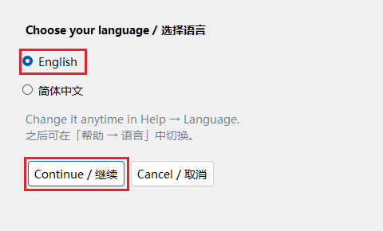
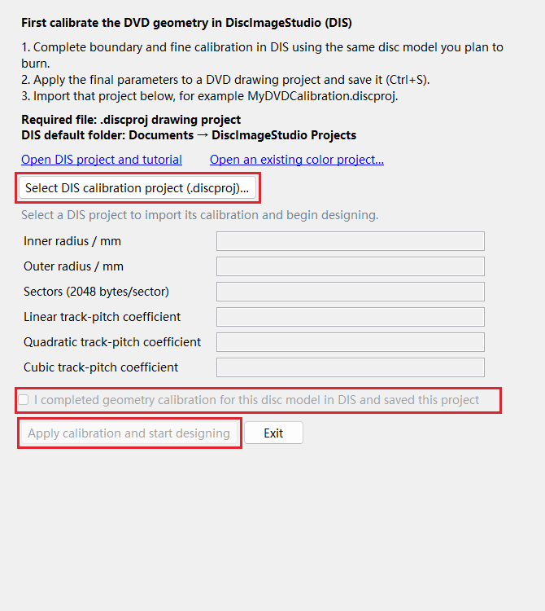
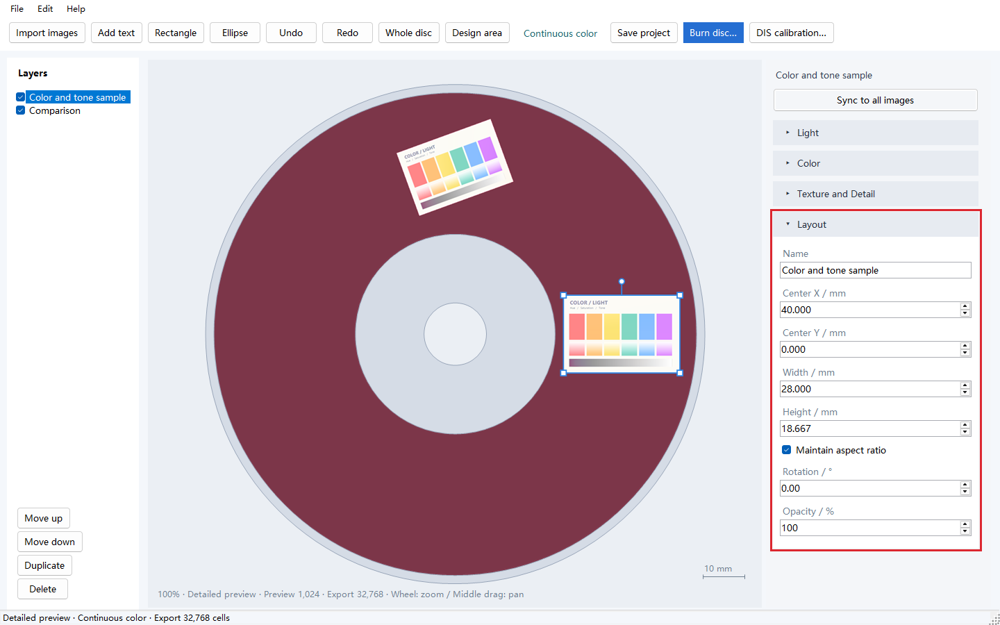
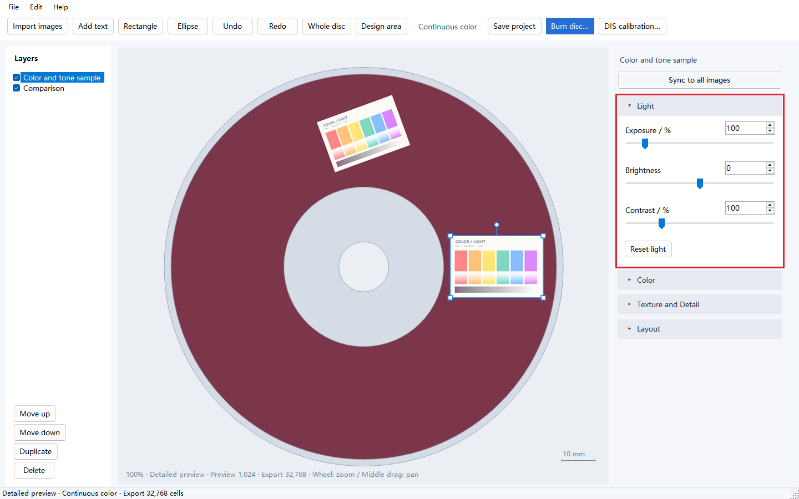
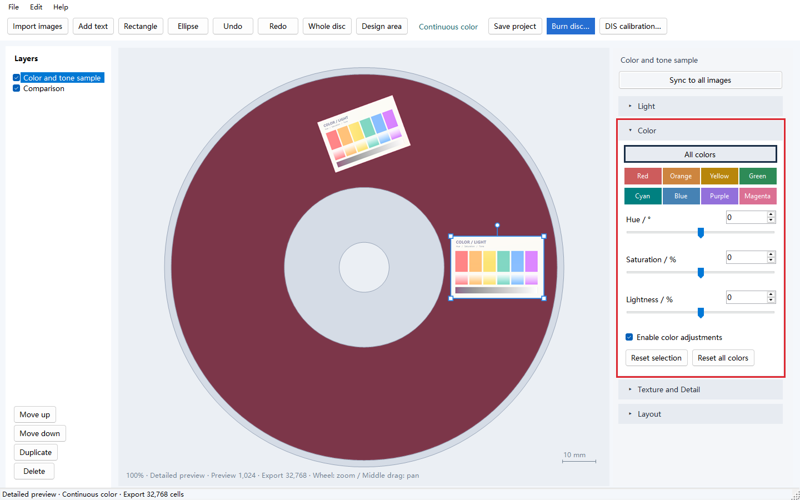
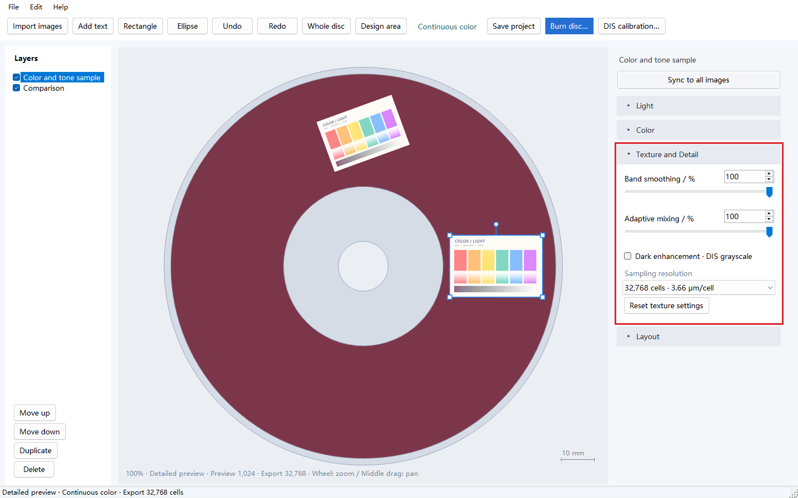
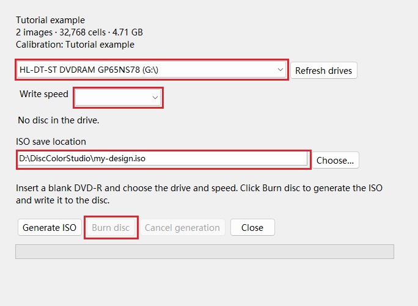

Disc Color Studio · User Guide
Follow these eight steps to make a color disc. Red boxes highlight the controls; click a screenshot to enlarge it.
1. Download the application and prepare the discs and drive
- Open the latest version under Releases. In Assets, download the Windows portable package whose name contains
win-x64.zip. - Extract the entire archive into a folder and run
DiscColorStudio.exe. Keep the accompanyingdata,guide, and other application files in place. - At startup, select English and click Continue / 继续. The application remembers your choice; switch languages through Help → Language….
- Prepare a DVD-R writer, discs for calibration, and a new blank single-layer DVD-R for your final design. Use the same disc model for calibration and the final burn.
Have a white LED lamp ready for viewing the finished disc.

2. Calibrate the disc geometry in DIS and import the saved project
Geometry calibration determines which data position on the disc corresponds to each image position. Complete this step in DiscImageStudio (DIS) first.
- Follow the DIS v1.4.0 calibration tutorial (Chinese): establish the initial geometry, then perform boundary and fine calibration.
- Apply the final calibration parameters to a DVD drawing project in DIS and press Ctrl+S. This saves a
.discprojfile, such asMyDVDCalibration.discproj. The default folder is Documents → DiscImageStudio Projects. - Start Disc Color Studio. In the startup dialog below, click Select DIS calibration project and choose the file you just saved.
- Review the imported disc parameters, check the confirmation box to confirm that the project contains your final calibration, and click Apply calibration and start designing.

The program reads the inner radius, outer radius, sector count, and three track-pitch coefficients automatically. The radii define the writable ring, the sector count determines data capacity, and the coefficients describe how the spiral track's position varies across the disc.
Calibration is saved with your color project. On later launches, choose Open an existing color project to continue. When switching disc models, use DIS calibration in the main toolbar to import the corresponding project.
3. Import and arrange images on the disc
- Click Import images at the top left and select one or more images, or drag image files into the window.
- Click an image on the canvas or in the layer list on the left. A blue border identifies the selected image; the right sidebar edits this image.
- Drag the image to move it, drag its corners to resize it, and drag the round handle above it to rotate it. Place the content you want to keep within the burgundy writable ring.
- Expand Layout in the right sidebar to enter physical dimensions. A width of
28, for example, means 28 mm on the disc. Keep Maintain aspect ratio checked to preserve the image's proportions.

| Control | How to use it |
|---|---|
| Center X / Y | Coordinates in mm, measured from the disc center. Positive X points right; positive Y points down. Enter values for precise alignment. |
| Width / Height / Rotation | Set physical dimensions and orientation. Hold Shift while dragging the rotation handle to rotate in 15° increments. |
| Opacity | Defaults to 100%. Lower values blend the image with underlying layers or the disc background. |
| Move up / down | Change the stacking order. Layer checkboxes toggle visibility, and Duplicate creates a comparison copy. |
| Add text / Rectangle / Ellipse | Add these from the toolbar, then select them to edit their content, dimensions, and fill color in Layout. |
| Whole disc / Design area | Change the viewing area. Use the mouse wheel to zoom and drag with the middle mouse button to pan. |
Continuous color automatically selects a viewing direction and texture mixture based on image content and position. The canvas predicts each image at its own suitable viewing orientation. Rotate the physical disc to view the images in turn.
4. Adjust overall brightness in Light
Select an image, expand Light, and drag a slider or enter a value to adjust its tones.

| Setting | What it does | Starting point and adjustment |
|---|---|---|
| Exposure | Multiplies the input image signal; 100% retains its original level. | Default: 100%. If the whole image is dark, try 110%–130%, watching detail in faces, white backgrounds, and highlights. |
| Brightness | Adds to or subtracts from brightness values across the image. | Default: 0. Try +5 to +10 for a small lift, or negative values to darken it. |
| Contrast | Changes the difference between light and dark tones. | Default: 100%. Try 110%–120% if the image looks flat, or around 90% to compare how highlight and shadow detail is retained. |
Reset light restores exposure to 100%, brightness to 0, and contrast to 100%.
5. Adjust overall and individual colors in Color
HSL stands for Hue, Saturation, and Lightness. All colors adjusts the entire selected image. The eight color buttons select hue ranges in the input image, making it easier to adjust clothing, hair, and other areas separately.
- Expand Color and leave Enable color adjustments checked.
- Start with All colors, selected by default. Adjust the three sliders to change the whole image.
- To refine a particular color, select Red, Orange, Yellow, Green, Cyan, Blue, Purple, or Magenta. For purple clothing, start with Purple; pinkish-purple areas may also respond to Magenta.
- Switch back to All colors to continue the overall adjustment. Both sets of settings are retained and combined.

| Setting | What it does and how to choose |
|---|---|
| Hue | Rotates colors. Range: −180° to +180° for All colors, −60° to +60° for an individual range. Default: 0°. Start with changes of 5°–10°. |
| Saturation | Controls vividness, from −100 to +100; default 0. Try +10 to +20 for muted colors. In All colors, −100 makes the image grayscale; neutral grays stay neutral as saturation increases. |
| Lightness | Makes colors lighter or darker, from −100 to +100; default 0. Start with increments of 5–10. All colors also adjusts black, white, and gray areas. |
Individual hue adjustments are applied first, followed by All colors. Uncheck Enable color adjustments to compare before and after. Reset selection resets the currently selected All colors or hue range; Reset all colors resets both the overall adjustment and all eight ranges.
6. Choose mixing and sampling settings in Texture and Detail
A texture is a fine, repeating data pattern written to the DVD. The program selects and mixes textures using the measured color table to form the image's colors and tones.

| Setting | What it does | How to choose |
|---|---|---|
| Band smoothing | Smooths transitions between texture mixtures at neighboring disc angles, reducing stripe-like color boundaries. | Start at 100%. To compare transition strength, duplicate an image and set the copy to 50%. |
| Adaptive mixing | Distributes several related textures across fine regions to approximate intermediate colors and gradients. | Start at 100%. Try 50% on a copy to compare a less mixed result, looking at skin tones, gradients, and outlines. |
| Dark enhancement · DIS grayscale | Adds DIS grayscale textures in dark, low-saturation areas to strengthen black clothing, shadows, and dark outlines. | Off by default. Enable it if dark areas look too bright or too colorful, then check their remaining detail. |
| Sampling resolution | Controls the spatial density at which the source image is sampled during ISO generation. | Start at 32,768 for general images; increase it step by step for fine lines and small text. |
Choosing a sampling resolution:
| Setting | Software sampling interval | Suggested use |
|---|---|---|
| 32,768 | About 3.66 μm per cell | A starting point for general image work. |
| 65,536 | About 1.83 μm per cell | Further comparison for fine hair, small text, and detailed outlines. |
| 131,072 / 262,144 | About 0.92 / 0.46 μm per cell | Dense sampling of very fine content in small areas; ISO generation takes longer. |
The grid count divides the 120 mm canvas width into that many sample positions. The Preview value at the bottom of the window is used for interactive display; Export is used to generate the ISO.
7. Compare settings, sync adjustments, and save the project
- To compare settings on one disc, select an image, click Duplicate on the left (or press Ctrl+D), move the copy elsewhere, and adjust it independently.
- Once you have a set of adjustments you like, click Sync to all images at the top of the right sidebar. The selected image's Light, overall and eight-range HSL, texture, and sampling settings are applied to all images and become the defaults for later imports. Each image retains its position, size, rotation, and opacity.
- Click Save project (or press Ctrl+S) to save a
.discolorfile. It includes image assets, layer layout, adjustments, and the imported DIS geometry calibration.
Use Ctrl+Z / Ctrl+Y for Undo / Redo. A sync operation can also be undone as a single step.
8. Generate and burn the ISO, then view the disc
- Insert a new blank single-layer DVD-R and click Burn disc in the toolbar.
- Select the writer in the drive list. After inserting a disc, use Refresh drives to update the media information.
- Choose one of the speeds offered by the drive. For the tested Verbatim 95058 media, 4× is a useful starting point. Use the same speed for your calibration and final burns to help reproduce the result.
- Click Choose to set the ISO path, for example
D:\DiscColorStudio\my-design.iso. Allow about 5 GB of free disk space for a single-layer DVD image. - Click Burn disc. The program generates the ISO, writes it to the disc, and displays the result. To save the image first, click Generate ISO instead.

Remove the finished disc and face its data side toward a white LED lamp and the observer. Keep the lamp and your viewing position fixed, then slowly rotate and slightly tilt the disc to find a favorable orientation for each image. The video above demonstrates this process.
What the three file types are for:
| File | Source and purpose |
|---|---|
.discproj |
A DVD drawing project saved by DIS. Import its geometry calibration when starting a design here. |
.discolor |
A color design project saved by this application. Reopen it to continue arranging and adjusting images. |
.iso |
The generated DVD data image, ready to be written to a disc. |
Open Help → User guide, or open UserGuide.html (English) or 使用说明.html (Chinese) from the portable package.